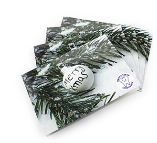
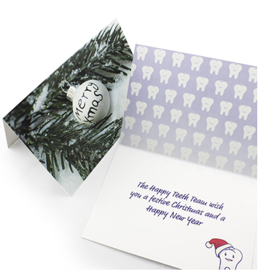

Price: $3
Printed A4 folded to A5 greeting cards are perfect for any situation. As these are our largest size, they are especially well suited to occasions where more space is required (e.g. group cards where many people will be leaving a message). As our greeting cards are fully customisable, they are the ideal way to express any message or gesture.
No matter the occasion, we are sure you will find the perfect use for our printed A4 folded to A5 greeting cards. From invitations, Christmas cards, mothers and Father’s Day cards, anniversary invitations, birthday invitations, corporate cards, engagement invitations, wedding invitations, Easter cards and much more.